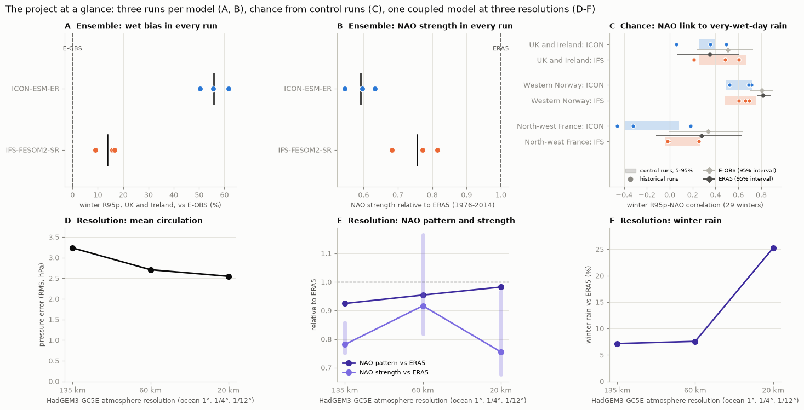
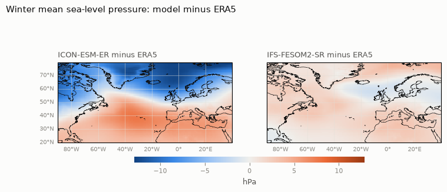
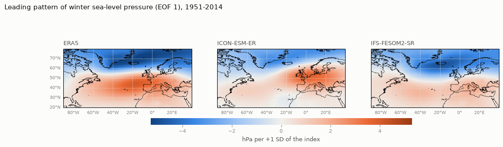
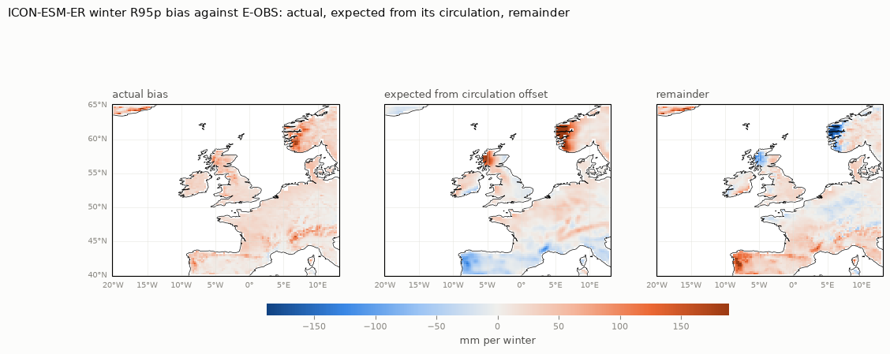
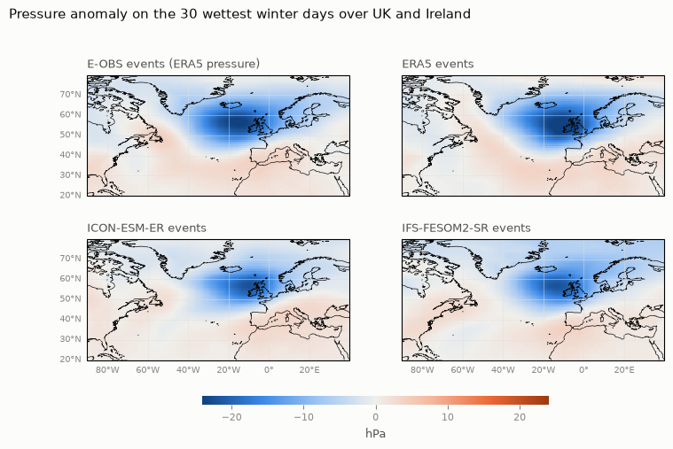
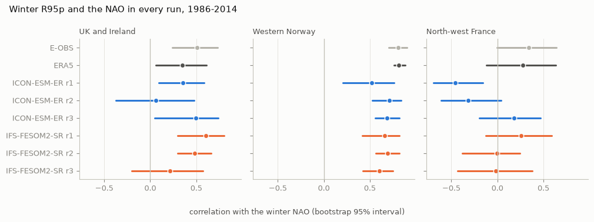
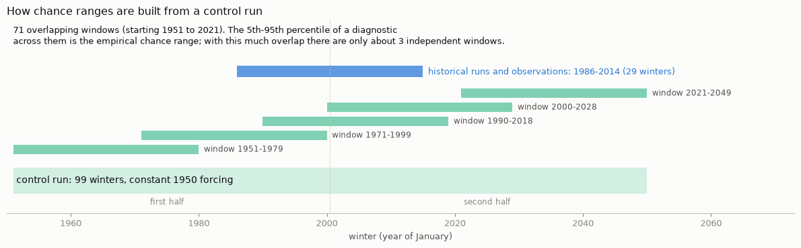
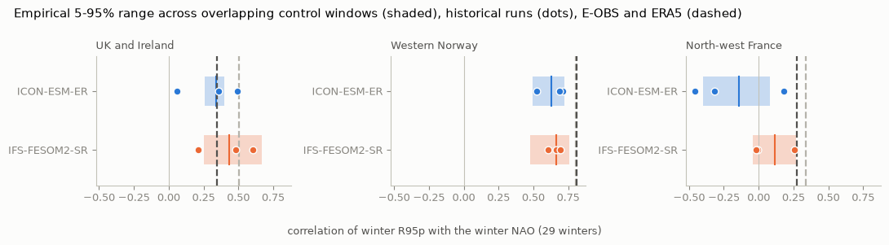
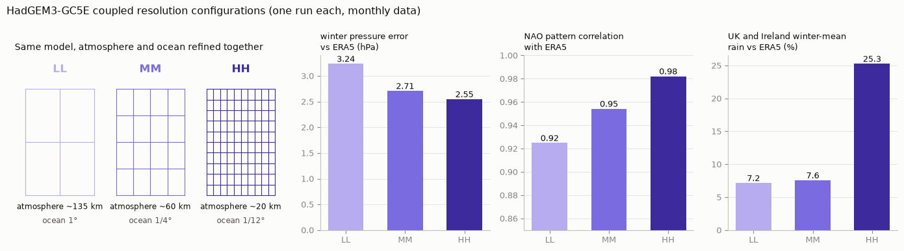

North Atlantic circulation and European winter extremes in high-resolution climate models
An evaluation of EERIE coupled climate models against ERA5 and E-OBS: the winter North Atlantic
Oscillation (NAO), daily rain and temperature extremes over north-west Europe, and how far the results depend on
the model run, on chance and on resolution. The UK and Ireland, western Norway and north-west France serve as worked
examples; every map covers the whole north-west European domain.
Question. Which features of the simulated North Atlantic winter circulation and of
European winter extremes are persistent model characteristics, which arise from internal variability, and how do
they change across coupled model resolution configurations?
Experimental design. Three experiments answer three different questions with different data: which biases
persist across runs of one model (six historical runs with daily data), what chance can do in 29 winters (two 99-winter control
runs and a ten-member atmosphere-only ensemble), and what changes with resolution (HadGEM3-GC5E at three coupled configurations;
IFS atmosphere-only at 28 and 9 km). All share the same diagnostics and references.
6historical runsICON-ESM-ER and IFS-FESOM2-SR, three each: daily extremes
3HadGEM3-GC5E resolutionsabout 135, 60 and 20 km, ocean 1° to 1/12°: monthly

The project at a glance. How to read.A, B · Experiment 1: winter very-wet-day rain over UK and
Ireland relative to E-OBS, and NAO strength relative to ERA5; one dot per historical run, black bar the mean of three.
C · Experiment 2: correlation of winter very-wet-day rain with the NAO in three regions; shaded boxes, the
control-run chance range (empirical 5th–95th percentile across overlapping 29-winter windows); dots, the historical
runs; diamonds with bars, E-OBS and ERA5 with 95% intervals. D–F · Experiment 3: HadGEM3-GC5E with atmosphere and
ocean refined together: winter pressure error, NAO pattern and strength (pale bars: the two halves of each run), and
winter-mean rain over UK and Ireland.
Three headline findings
Experiment 1Biases consistent across runs
ICON-ESM-ER's shifted circulation (+1.9 to +2.1 SD along the NAO) and its 50–62% excess of very-wet-day rain over UK and Ireland appear in all three sampled runs, as does a too-weak NAO in both models. The NAO link to UK and Ireland rain extremes, by contrast, varies between runs as much as between models.
Experiment 2What chance can and cannot do
In 29 winters chance moves the NAO–rain link over UK and Ireland by ±0.1 to ±0.2. It rarely produces ICON-ESM-ER's wrong-sign link over north-west France; over western Norway every model period lies below the observed point estimate (0.81), within its uncertainty (0.71–0.91).
Experiment 3Resolution helps the circulation, not everything
Across HadGEM3-GC5E's coupled configurations the winter pressure error falls and the NAO pattern correlation increases; NAO strength does not follow resolution, and winter-mean rain over UK and Ireland rises to 25% above ERA5 at 20 km.
Main message. Evaluating climate models for regional extremes needs three questions kept
apart: is a feature the same in every sampled run, could chance in a short record produce it, and does it change
with resolution?
Scope and limits. Daily extremes are evaluated for ICON-ESM-ER and IFS-FESOM2-SR (three
runs each). HadGEM3-GC5E is evaluated with monthly data only, one run per resolution, because its daily data are not
public; its atmospheric and ocean resolutions change together. Control-run chance ranges come from overlapping windows
and understate chance. This is a research prototype and all results are exploratory. The experiments answer different
questions, so they are not combined into one ranking of the models.
Experiment 1Historical ensemble evaluation: daily extremes and their drivers
Which biases in circulation, NAO and extremes persist across runs of the same model? ICON-ESM-ER and IFS-FESOM2-SR against ERA5 and E-OBS, step by step: data → mean climate and extremes → drivers → the same tests on three runs.
Historical member r1: the chain in one figure (run r1 of each model). Read each row from left to right: (A) average winter pressure minus ERA5,
expressed as an NAO state; (B) the model's NAO pattern against ERA5's (black lines) and its strength; (C) correlation of
winter very-wet-day rain with the NAO; (D) very-wet-day rain relative to E-OBS. ICON-ESM-ER (top) is biased at every
step, with 62% more winter R95p than E-OBS over UK and Ireland (regional land average). IFS-FESOM2-SR (bottom) generally
represents circulation and rain extremes more realistically, although its NAO is too weak (71% of ERA5's) and its southern
centre weaker and displaced. Winters 1986–2014 (B: 1951–2014), one run per model.
1 · DATA
Find and prepare
Public EERIE output, ERA5 and E-OBS, cut to three nested regions, checked and harmonised.
2 · EVALUATION
Is the climate right?
Mean circulation, temperature and rain; then extremes: RX1day, TXx, R95p.
3 · DRIVERS
Why do extremes happen?
The NAO, its link to extremes, and the weather behind the heaviest rain days.
4 · THREE RUNS
Model or chance?
The same tests on runs r2 and r3; chance and resolution follow in experiments 2 and 3.
close to observationspartly rightclearly biasedfact or method
close to observationspartly rightclearly biasedfact or method
1.1 · Data
From 945 public datasets to one tested archive
Which simulations have what we need, and can they actually be read?
945 datasets inventoried on the DKRZ server; the coupled models' historical runs r1–r3 and control runs have all the daily and monthly fields needed. HadGEM3-GC5E comes from the public CEDA archive (monthly only).Three domains: North Atlantic (NAO), north-west Europe (extremes), UK and Ireland (headline), plus western Norway and north-west France.Periods: 1950–2014 monthly (64 winters for the NAO), 1985–2014 daily (a standard 30-year period).Data from three servers (DKRZ, CEDA, ECA&D) cut to the study regions: about 12.3 GB kept in total, from an estimated 700–900 GB streamed. Every source in the same units, time stamps and grid.
How to read. The three nested analysis regions on a longitude–latitude map. Largest box: the North
Atlantic (20–80°N, 90°W–40°E), where the NAO pattern is computed from sea-level pressure. Middle box: north-west Europe,
where temperature, rainfall and extremes are evaluated on a common 0.25° grid. Smallest box: UK and Ireland, the headline
region for all regional averages. Western Norway and north-west France are used as contrasts on the wet and dry sides
of the NAO.
1.2 · Mean climate and extremes (run r1)
Mean winter climate
Before trusting extremes: is the basic winter climate credible?
IFS-FESOM2-SR: winter pressure close to ERA5 (typical difference 1.8 hPa, pattern correlation 0.99).ICON-ESM-ER: pressure too low in the north, too high in the subtropics: westerlies too strong; winter rain +29%.Both about 0.8 °C too cold in winter.
Why it matters. A too-strong pressure drop from the subtropics to Iceland drives too-strong
westerlies, which carry more moist Atlantic air onto windward coasts and mountains. ICON-ESM-ER's average winter
therefore looks like a strongly positive NAO winter.
Notebook 03

How to read. Average winter (December–February) sea-level pressure of each model minus ERA5,
1985–2014, in hPa. Orange: pressure too high; blue: too low; pale: close to ERA5. ICON-ESM-ER (left) shows a north–south
dipole: up to about 14 hPa too low near Iceland and the Arctic and up to about 8 hPa too high over the subtropical
Atlantic and Mediterranean. A stronger pressure drop from south to north means stronger westerly winds into Europe.
IFS-FESOM2-SR (right) stays within a few hPa almost everywhere.
Extremes
How heavy is the wettest day, how hot the hottest?
IFS-FESOM2-SR: wettest day of the year over UK and Ireland +8% against E-OBS, +17% against ERA5; hottest day within 1 °C of ERA5.ICON-ESM-ER: wettest day +48% / +60%; hottest day about 2 °C too cool.Most of IFS-FESOM2-SR's apparent hot-day deficit against stations is a grid-cell-versus-station effect, revealed by adding ERA5.
Why it matters. ICON-ESM-ER's wet bias covers inland France and Iberia, not only the windward
coasts a too-strong westerly flow would wet. It is far larger than chance: identical runs differ by only 1–3% in these
30-year averages.
Notebook 05
How to read. The wettest day of the year (RX1day), averaged over 1985–2014, of each model
relative to each reference, in percent of the reference. Top row against E-OBS (stations, land only, so the sea is
blank); bottom row against ERA5 (reanalysis, land and sea). Left column ICON-ESM-ER, right column IFS-FESOM2-SR. Orange:
the model's wettest day is heavier than observed; blue: lighter. ICON-ESM-ER is orange almost everywhere, typically
+50%; IFS-FESOM2-SR is mostly pale, within about ±20%. The bias against ERA5 is larger because ERA5's extremes are lower
than E-OBS's.
1.3 · Drivers (run r1)
The North Atlantic Oscillation
Is the main driver of winter weather realistic?
IFS-FESOM2-SR: recognisable NAO (pattern correlation 0.87), strength 71% of ERA5's.ICON-ESM-ER: leading pattern mixed across two modes, strength 59% (strength: standard deviation of the winter index along the common ERA5 pattern, relative to ERA5's); its average winter resembles a +2.3 SD positive NAO.
Why "mixed". ICON-ESM-ER's first two patterns explain 29% and 21% of the variance, closer than
their sampling error allows to separate (North et al. 1982), so the real NAO is split between them (overlaps 0.76 and
0.58). The mixing persists in all five domains tested for this run; but in runs r2 and r3 the pattern resembles
ERA5's closely (0.90 and 0.94), so it was largely the chance of run r1. The NAO
strengths along ERA5's pattern barely change (0.56–0.61 and 0.68–0.72). Every model is therefore measured along the
common ERA5 pattern.
Notebook 04

How to read. The leading pattern of winter sea-level-pressure variability (first EOF), 64
winters 1951–2014, in hPa per +1 standard deviation of each dataset's own index. Blue: lower pressure in a positive-NAO
winter; orange: higher. ERA5 (left) shows the textbook NAO: low near Iceland, high near the Azores. IFS-FESOM2-SR
(right) has the same dipole, with a weaker southern centre shifted towards the Mediterranean. ICON-ESM-ER (middle) has
its southern centre over Europe and the North Sea: its leading pattern mixes the NAO with a second mode.
From the NAO to extremes
Do positive-NAO winters bring heavier rain extremes, as in the real world?
IFS-FESOM2-SR reproduces the link in sign and pattern (UK and Ireland correlation 0.60 in r1).ICON-ESM-ER: right sign in the north (0.36), weak in Norway, wrong sign over north-west France.Three runs per model: over UK and Ireland three runs of one model span 0.06–0.49 (ICON-ESM-ER) and 0.21–0.60 (IFS-FESOM2-SR), so the models cannot be ranked there; over western Norway every run is below the observed point estimate.Observed: 0.51 in E-OBS, 0.35 in ERA5; strong in western Norway (0.81).How certain: over UK and Ireland the bootstrap 95% intervals (about ±0.25) overlap for all four datasets, so 29 winters cannot tell them apart. ICON-ESM-ER's weak link in Norway and wrong sign in France do pass formal tests. No single winter drives any value.
How to read. Correlation between the winter NAO and winter very-wet-day rain (R95p),
land average of each region, 29 winters 1986–2014, both series detrended. One panel per region. Dots: the correlation;
bars: bootstrap 95% interval (winters resampled 5000 times). Grey line: zero. Light grey E-OBS and dark grey ERA5 are
the references, each paired with the ERA5 NAO; blue ICON-ESM-ER and orange IFS-FESOM2-SR use their own NAO. Overlapping
bars mean the values cannot be told apart in 29 winters: true for all four over UK and Ireland. ICON-ESM-ER's bar lies
below both references in western Norway and on the wrong side of zero in north-west France.
Does the circulation explain the wet bias?
If ICON-ESM-ER's only error were its shifted circulation, how wet would it be?
Method: observed change in rain extremes per SD of NAO × the model's mean circulation offset (2.1 SD along the NAO).Consistent with 38–74% of ICON-ESM-ER's very-wet-day rain bias and 18–39% of its wettest-day bias over UK and Ireland, mostly on windward coasts and mountains.The rest is a broad wet bias: ICON-ESM-ER rains too often (+34% to +43% wet days) and too hard (+21% to +28% rain per wet day). IFS-FESOM2-SR is within about 10% on both.
Reading it. A linear decomposition test: an association supported by diagnostics, not a
demonstrated cause. It applies the response of ordinary NAO winters to an offset beyond most of them. The remainder
may come from how the model makes rain, from circulation errors that do not project onto the NAO, or from a
non-linear response of storms to a shifted mean flow.
Notebook 06 · section 11

How to read. ICON-ESM-ER's winter very-wet-day rain (R95p) bias against E-OBS, in mm per
winter, 1986–2014, land only. Left: the actual bias. Middle: the bias its mean circulation offset alone would produce,
computed as the observed change in R95p per +1 SD of NAO times the model's offset of 2.1 SD. Right: the remainder,
actual minus expected. The middle panel puts extra rain on windward coasts and mountains (western Scotland, western
Norway) and less rain in the south. The right panel stays orange over most of the continent and Iberia: a wet bias that
the circulation offset does not account for. A linear decomposition test, not a proof of cause.
The weather behind the heaviest rain
Do the models get heavy rain for the right reason?
Both models: the same deep low north-west of the islands as ERA5 on the event day (pattern correlation 0.94–0.95).Build-up two days earlier: IFS-FESOM2-SR 0.85, ICON-ESM-ER 0.72.Day-to-day pressure variability 13–17% higher over the UK than ERA5 (enhanced synoptic storminess; a proxy, cyclones not tracked); persistent highs slightly too rare.
Notebook 09 · 30 wettest winter days per dataset

How to read. Average sea-level-pressure anomaly, in hPa, on the 30 wettest winter days
over UK and Ireland land, 1986–2014, with events at least five days apart. Each panel uses the dataset's own wettest days
and its own winter-mean pressure. The E-OBS panel shows ERA5 pressure on E-OBS's wettest days. Blue: lower pressure than
usual, the storm; orange: higher. All four show a deep low just north-west of Ireland and Scotland with higher pressure
to the south: south-westerly flow carrying moist Atlantic air onto the islands. Pattern correlation with ERA5: 0.94–0.95
for both models.
1.4 · The same tests on three runs
Three runs of each coupled model
Which results of run r1 are consistent across the three sampled runs, and which were a single run's chance?
Two more historical runs (r2, r3) of ICON-ESM-ER and IFS-FESOM2-SR, processed exactly like r1.Consistent across all three sampled runs: ICON-ESM-ER's mean-circulation offset (+1.9 to +2.1 SD) and wet bias (R95p +50% to +62%), both models' too-cool hottest day, too-weak NAO (0.55–0.63 and 0.68–0.81 of ERA5) and wet-day statistics.Chance: the NAO link over UK and Ireland (0.06–0.49 and 0.21–0.60) and ICON-ESM-ER's "mixed" NAO pattern (r1 only).New, consistent finding: over western Norway all six runs have a weaker NAO link (0.52–0.71) than observed (0.81; 95% interval about 0.71–0.91).
Notebook 10 · winters 1976–2014 (NAO) and 1986–2014 (extremes)

How to read. Correlation between the winter NAO and winter very-wet-day rain (R95p), land average of each region, 1986–2014, with bootstrap 95% intervals. References first (light grey E-OBS, dark grey ERA5), then the three runs of ICON-ESM-ER (blue) and IFS-FESOM2-SR (orange). Over UK and Ireland the three dots of one model scatter as widely as their bars; over western Norway all six lie below the references.
Experiment 2Internal variability
How much can chance alone change the conclusions drawn from 29 winters?

How the chance ranges are built. Each 29-winter window of a control run (constant 1950 forcing) gives one value of a
diagnostic; the empirical 5th–95th percentile across the 71 overlapping windows is the chance range. Neighbouring windows share most of
their winters, so there are only about three independent samples per run.
How much can chance alone do?
100 years of each model with constant 1950 forcing, cut into windows of 29 winters.
No 29-winter window of either model reaches the observed NAO strength (strongest: 0.80 and 0.95 against ERA5's 1.04).No window reaches the observed NAO link over western Norway (control maxima 0.77 and 0.78 against 0.81), but the observed value's own 95% interval (about 0.71–0.91) reaches them: a consistent but modest discrepancy.ICON-ESM-ER almost never produces the observed positive link over north-west France (median −0.14): consistent across its control run and two of three historical runs.Several historical runs fall outside their control range, so these ranges understate chance: they are lower bounds.
Notebook 11 · control runs 1950–2049, 71 overlapping windows

How to read. For each region and model, the shaded box spans the empirical 5th–95th percentile of the NAO–R95p correlation across the overlapping 29-winter windows of the control run (line: median); the windows are not independent samples. Dots: the three historical runs, 1986–2014. Dashed lines: E-OBS (light) and ERA5 (dark). A reference line far outside a model's box means the model rarely produces what was observed, as for ICON-ESM-ER over north-west France; over western Norway the references lie just above both boxes, within their own uncertainty.
Identical atmosphere-only runs
How much do identical runs differ by chance alone?
NAO strength in ten identical runs: from 0.70 to 1.00 of ERA5's.NAO link to UK and Ireland rain extremes in three identical runs: correlation from 0.04 to 0.33; 9 km (0.19) lies inside that range.Filtering small-scale sea-surface temperature: −1% and +4% change in NAO strength, far inside the spread (no detectable change in NAO strength; atmosphere-only, not a coupled test).
Notebooks 07, 08
How to read. NAO strength of every member of three ten-member atmosphere-only
ensembles of IFS at 28 km, 43 winters 1981–2023. Strength is the standard deviation of the winter index along the ERA5
pattern, in ERA5 units. One dot per member; black bar: ensemble mean; dashed line: ERA5. Top row: observed sea-surface
temperature; middle and bottom: two variants with small-scale temperature detail filtered out. The members of one
experiment range from 0.70 to 1.00, purely by chance; the three experiments overlap almost completely.
Experiment 3Resolution
How do circulation, NAO and winter rain change with resolution? One atmosphere model at two resolutions with the same sea-surface temperature, and one coupled model at three resolutions with atmosphere and ocean refined together.

The HadGEM3-GC5E configurations side by side. Left: schematic grid spacing; atmosphere (about 135, 60, 20 km) and
ocean (1°, 1/4°, 1/12°) are refined together, so this compares coupled configurations, not the atmospheric grid alone. Right: across
the tested configurations the winter pressure error decreases and the NAO pattern correlation with ERA5 increases, while winter-mean
rain over UK and Ireland rises sharply at the finest configuration. One run each, monthly data.
One coupled model at three resolutions: HadGEM3-GC5E
How does the coupled atmosphere–ocean resolution hierarchy affect the winter circulation?
Across the tested coupled configurations the winter pressure error falls (3.2, 2.7, 2.6 hPa) and the NAO pattern correlation with ERA5 increases (0.92, 0.95, 0.98).NAO strength does not follow resolution (0.78, 0.92, 0.76): it changes as much between the two halves of one run.UK and Ireland winter-mean precipitation (not daily extremes) 25% above ERA5 at 20 km, against +7% to +8% at the coarser grids.Jet about 1.5° too far north at 135 km, close to ERA5 at 60 km (wind available for LL and MM only).Caveat: atmosphere (135, 60, 20 km) and ocean (1°, 1/4°, 1/12°) are refined together, so this compares coupled resolution configurations; it does not isolate the atmospheric grid. One run per configuration; monthly data only, so no extremes.
Notebook 12 · one member per resolution, 1951–2014
How to read. Average winter sea-level pressure minus ERA5, 1986–2014, in hPa. Top row: HadGEM3 at about 135 km (LL), 60 km (MM) and 20 km (HH). Bottom row: ICON-ESM-ER and IFS-FESOM2-SR r1. Orange: too high; blue: too low. The HadGEM3 errors shrink from left to right; none of them has ICON-ESM-ER's large north–south dipole.
One atmosphere model at 28 km and 9 km
Same model, same ocean, 9 km instead of 28 km: are rain extremes better?
9 km gives 5–12% heavier winter rain extremes, mostly beyond the spread between 28 km members.Closer to observations over the mountains of western Norway.Overshoots over the UK and Ireland; no overall gain at the 25 km scale compared.The NAO link to UK and Ireland rain extremes at 9 km (0.19) lies inside the range of the three 28 km runs (0.04 to 0.33): it changes more by chance than by resolution.
Why this test is clean. Comparing two different models mixes resolution with everything else.
Here only the grid spacing differs: same model, same sea-surface temperature, same years. Both runs are compared on a
common 0.25° grid, so the question is whether running at 9 km improves rain at the 25 km scale. Both use parameterised
convection; at 9 km the model is in the convective "grey zone".
Notebook 08 · 1 run at 9 km, 3 members at 28 km, winters 1986–2014
How to read. The same atmosphere model (IFS) with the same observed sea-surface temperature,
run at 9 km and at 28 km. Each map shows the 9 km run minus the average of three 28 km runs, as a percentage of the 28 km
value, winters 1986–2014, both on the same 0.25° grid. Left: average winter precipitation. Right: the wettest winter day.
Orange: wetter at 9 km; blue: drier. Dots: the 9 km value lies outside the range of the three 28 km runs, so the
difference is larger than chance alone produces between identical runs. Orange with dots along west-facing coasts and
mountains (western Norway, western Scotland, the Alps) is a resolution effect. Colour without dots is within chance. Over the
open Atlantic the 9 km run is a few percent wetter in the winter mean; the 28 km runs differ so little there that even this
small change is dotted.
Synthesis
What the three experiments together support, what remains open, and what this project did not test. The
evidence for each point is in the experiment sections above.
What holds
ICON-ESM-ER's circulation bias and wet bias appear in all three sampled runs and are far larger than the
differences between identical runs; the circulation is consistent with only part of the wet bias (experiment 1).
IFS-FESOM2-SR has a credible mean circulation and rain extremes within 10–20% of the references (experiment 1).
Both models' NAO is too weak in every historical run and in every 29-winter window of their control runs (experiments 1 and 2).
Both models bring the heaviest UK rain through the right weather pattern (experiment 1).
Across HadGEM3-GC5E's coupled configurations the winter pressure error falls and the NAO pattern correlation increases (experiment 3).
What is uncertain
The NAO link over the UK and Ireland: three runs of one model span as much as the two models and the two
references; chance alone moves it by ±0.1 to ±0.2 in 29 winters (experiments 1 and 2).
Western Norway: every model period is weaker than the observed estimate, but within its uncertainty (experiment 2).
The chance ranges come from overlapping windows of one run per model and understate chance (experiment 2).
Resolution and rain: one run per HadGEM3-GC5E configuration, monthly data, atmosphere and ocean refined
together; winter-mean rain over UK and Ireland rises at the finest one (experiment 3).
What was not tested
Atmospheric resolution alone in a coupled model, and daily extremes at the three HadGEM3-GC5E resolutions.
Coupled sensitivity to ocean eddies (only the atmosphere-only SST test, notebook 07).
Summer drivers, future scenarios, model complexity and air quality.
Tracked cyclones (a storminess proxy is used instead).
The full table of run-r1 results for both models (circulation, NAO, extremes, wet days, storminess) is in the
summary notebook.
Status and future scope
This is a research prototype: a complete, tested chain from public data to conclusions, run on what one laptop and
the public archive allow (two coupled models with three runs each and their control runs for extremes, a third model at three resolutions for the circulation, 29 winters of daily data). It is built to be scaled up.
More members
The project uses three runs per model and the control runs. Ten or more runs per model would turn the remaining "chance" results, such as the NAO link over the UK, into firm ranges.
More models
Other EERIE configurations, HighResMIP, CMIP6 and CMIP7 through the same code, to place these two models in a multi-model spread and test resolution across models.
More science
Rain-producing processes behind the wet bias; longer daily records; summer drivers; physical climate storylines built on the heavy-rain event composites.
Scaling up technically
Run next to the data on DKRZ Levante or JASMIN instead of streaming to a laptop; Dask distributed across members and years; a CMIP reader; block bootstrap, conservative regridding, cyclone tracking. Details: How it is built.
Exploratory results from three runs per coupled model, two 100-year control runs and HadGEM3-GC5E at three coupled resolution configurations. Full methods on the methods page; every number comes from the executed notebooks.